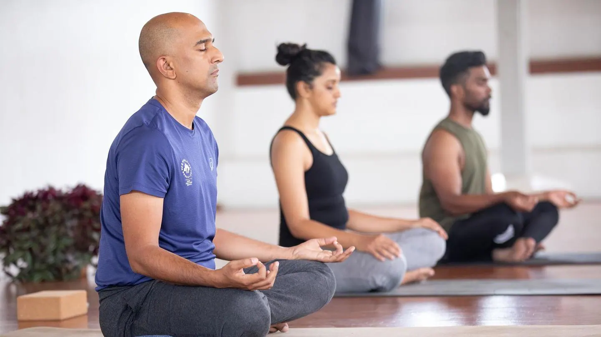
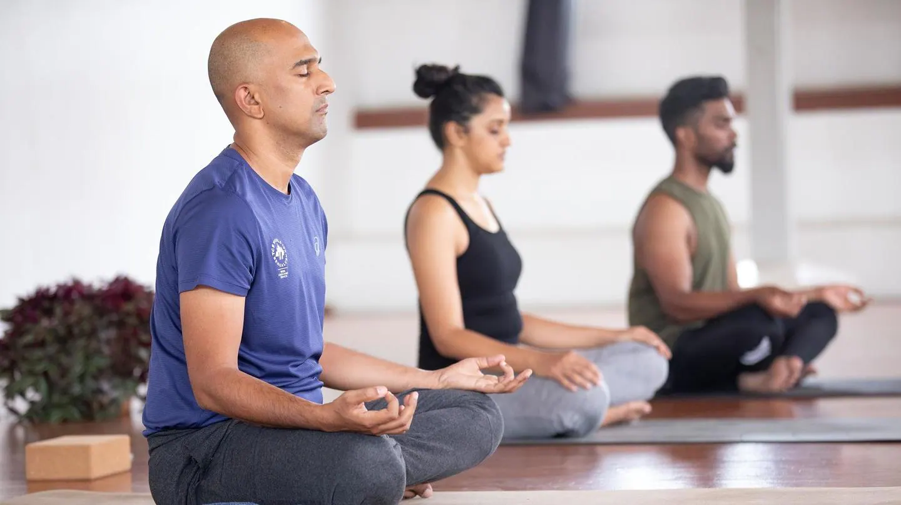

1. Yoga improves strength, balance and flexibility.
Slow movements and deep breathing increase blood flow and warm up muscles, while holding a pose can build strength.
2. Yoga helps with back pain relief.
Yoga is as good as basic stretching for easing pain and improving mobility in people with lower back pain. The American College of Physicians recommends yoga as a first-line treatment for chronic low back pain.
3. Yoga can ease arthritis symptoms.
Gentle yoga has been shown to ease some of the discomfort of tender, swollen joints for people with arthritis, according to a Johns Hopkins review of 11 recent studies.
4. Yoga benefits heart health.
Regular yoga practice may reduce levels of stress and body-wide inflammation, contributing to healthier hearts. Several of the factors contributing to heart disease, including high blood pressure and excess weight, can also be addressed through yoga.
5. Yoga relaxes you, to help you sleep better.
Research shows that a consistent bedtime yoga routine can help you get in the right mindset and prepare your body to fall asleep and stay asleep.
6. Yoga can mean more energy and brighter moods.
You may feel increased mental and physical energy, a boost in alertness and enthusiasm, and fewer negative feelings after getting into a routine of practicing yoga.
7. Yoga helps you manage stress.
According to the National Institutes of Health, scientific evidence shows that yoga supports stress management, mental health, mindfulness, healthy eating, weight loss and quality sleep.
8. Yoga connects you with a supportive community.
Participating in yoga classes can ease loneliness and provide an environment for group healing and support. Even during one-on-one sessions loneliness is reduced as one is acknowledged as a unique individual, being listened to and participating in the creation of a personalized yoga plan.
9. Yoga promotes better self-care.
Numerous studies show yoga’s benefits in arthritis, osteopenia, balance issues, oncology, women’s health, chronic pain and other specialties.